| 日付 | 2015年1月25日（日） |
|---|---|
| メンバー | 家族（妻、長女・3歳、長男・1歳） |
| アクセス | 車 |
横浜市にある「こどもの国」という施設に行く。
名前の通り子供のための遊び場で、広大な敷地内に
遊具や牧場、スケート場、グラウンドなどが点在している。
こどもの国の開園は9:30。
道が空いていて15分ほど早く駐車場に着いたが、すでに停まっている車は多い。
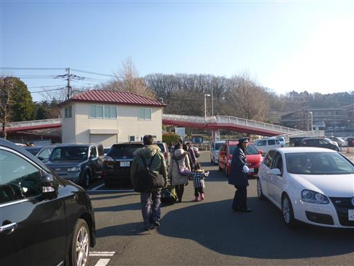
門の前は開園を待つ人々で溢れている。
9:30を1分ほど遅れて開園。普通、人が待っているときは若干早めに開園するものだと思うが…

風車の作成コーナーに惹かれて息子が声を上げ、風車を頂く。
それを見ていた娘もついでにもらう。本当は「造る」コーナーなのだが。
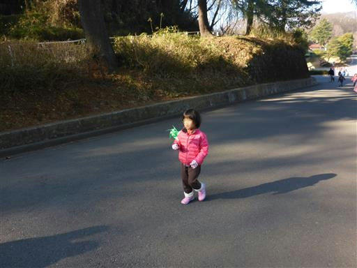
息子は抱っこを嫌がり、一生懸命歩いている。
敷地が広大なので、なかなか目的地にたどり着かない。
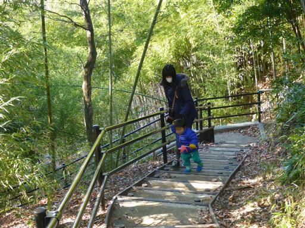
赤い吊橋を渡る。少し高台にあるため、この辺りは人気がない。
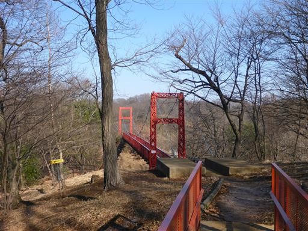
少し長めのすべり台。結構すべりは良い。
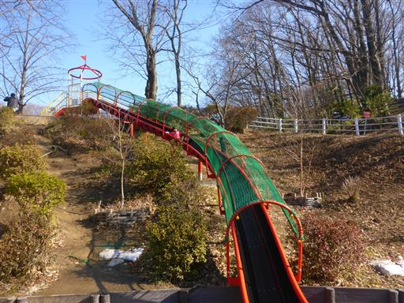
登るところもネットになっていて楽しめる。
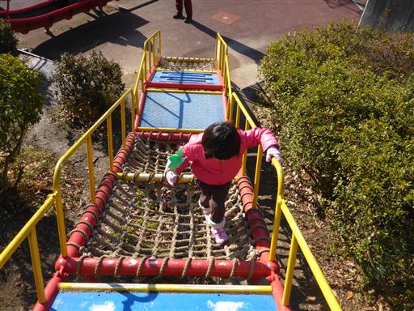
猪形の遊具。
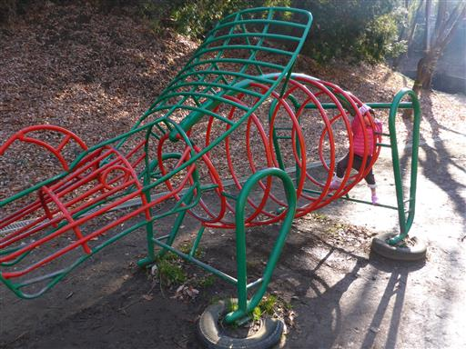
キュービックランドという遊具に到着。
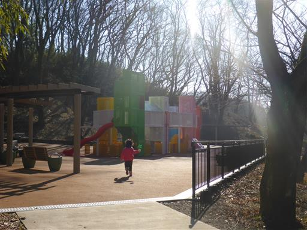
他ではあまり見られない変わった形の遊具だ。
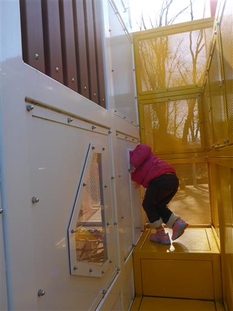
中は迷路のようになっている。
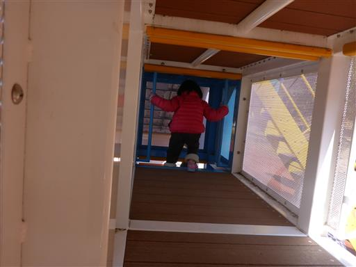
大人には狭すぎて、かなり移動しにくい。内部では上下移動があまりできず、
いったん外に出ないと上に行けない構造になっているのが残念だ。
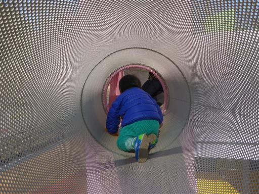
こちらはネットでできた富士山形の遊具。
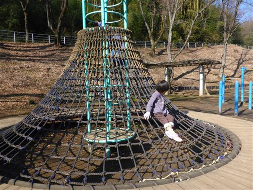
富士山の火口部に入ることができる。
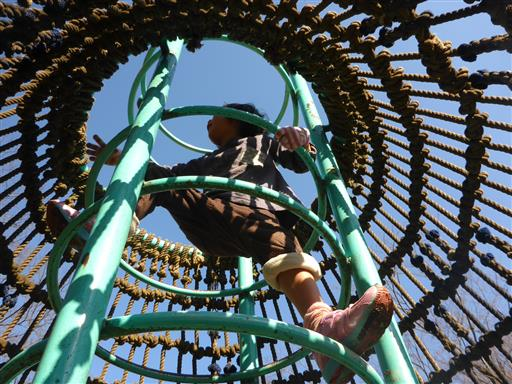
昼食をとったら、こどもの国で人気のローラーすべり台に行く。
全長110mでかなりの長さだ。
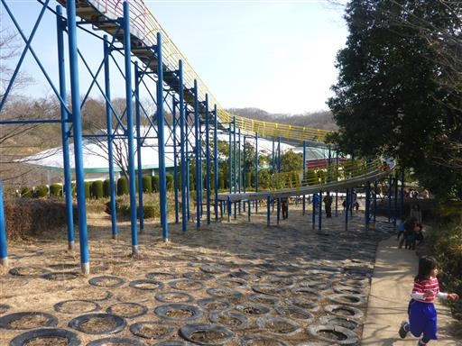
長い列ができている。結構待つ必要がありそうだ。。
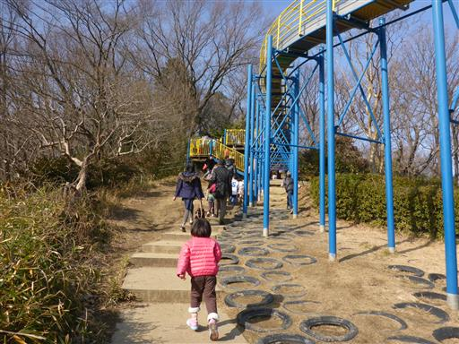
待っている間、息子は暇を持て余している。
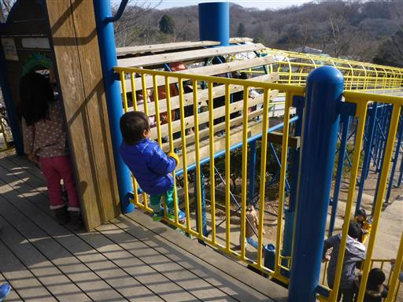
ようやく滑れる。傾斜は緩くてスピードが出ないが、
ローラーがあるのでしゃがんで滑るとそこそこスピードが出る。
再び待つのは嫌なので1回で止める。開園直後にここに来るべきだった…
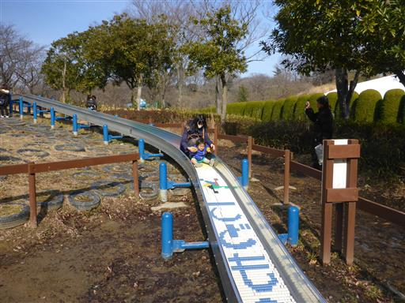
園内を走る「あかポッポ号」。
1時間に1～2本で、ゆっくり走るため、あまり移動には使えない。
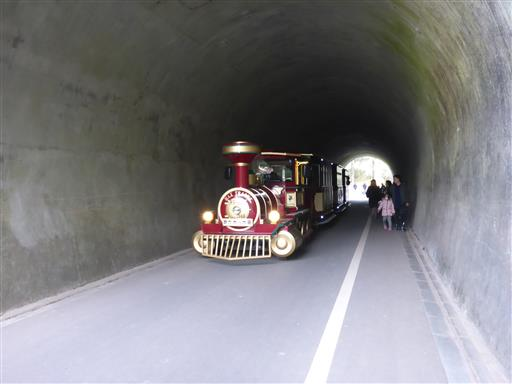
おもしろじてんしゃ。
10分制限で色々な自転車に乗ることができる。娘と一緒に入場。
2人乗り自転車では、娘のみが漕いでも案外進む。ずいぶん成長したものだ。
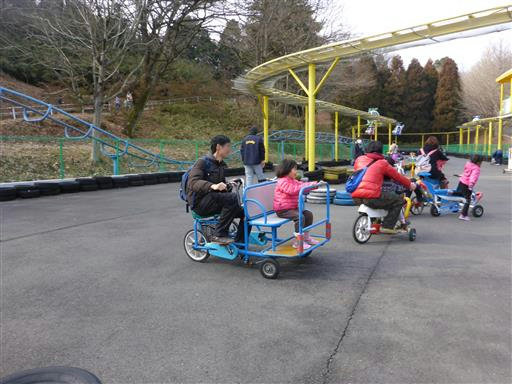
息子は昼寝をしていないため、早めに帰ることにする。
入場口付近はチョークの落書きコーナー。かなり広い範囲に絵が描かれている。
今回行った場所はこどもの国の一部。子供がもっと大きくなったら、1日たっぷり遊べそうな施設だった。
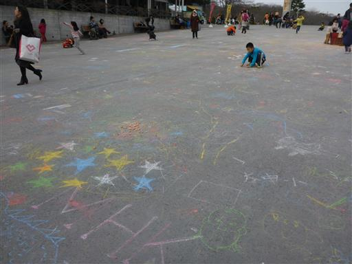